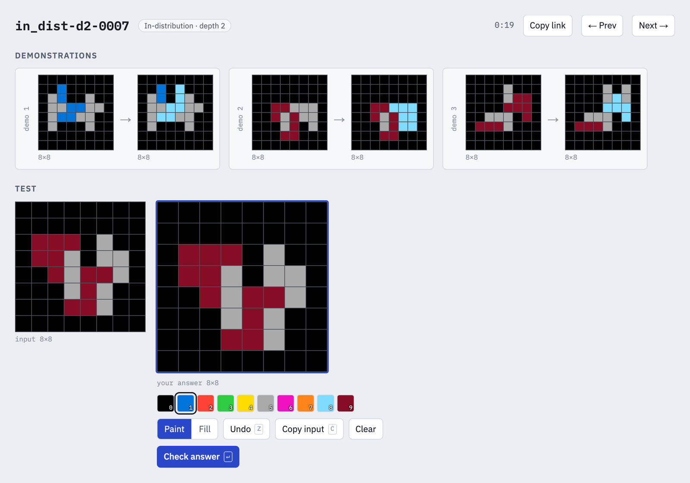
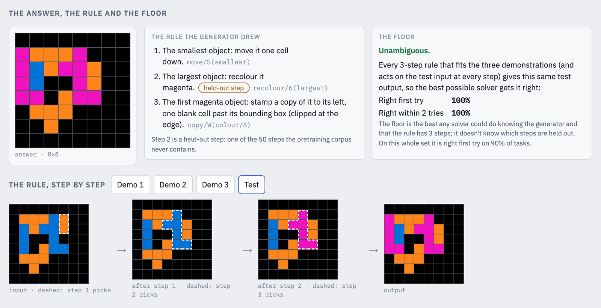

TLDR: I'm releasing pre-ARC, a new dataset of tasks intended for pretraining on ARC-AGI. It's the first of its kind to combine two properties:
The generator, corpus, and benchmark live at github.com/jagilley/pre-arc, and you can try the tasks yourself at jagilley.github.io/pre-arc.
Here's why that combination matters.
First off: why do you need an ARC pretraining corpus in the first place?
ARC-AGI-1 has only 400 examples in its training set, which is far too few for a learner to learn from scratch. So you need to (and François Chollet et al. intend for you to) train on your own data and transfer your learnings over to ARC.
In practice, this means every learning approach to ARC brings its own pretraining corpus, and the corpus ends up being the variable that matters most, but also the one nobody controls.
Given this, I built a new dataset called pre-ARC, which contains synthetic training examples that look like ARC tasks. As with regular ARC, you need to apply inductive reasoning to learn the rule which alters a grid. But there are about 1033 tasks you can generate this way :)
Each task is three demonstration pairs and a test input on an 8×8 grid. Each rule is one to four steps, and each step pairs a selector ("the largest object") with an operator ("flip it upside-down"). Alongside the endless corpus there's a fixed benchmark of 2,560 tasks, including a held-out split where every rule contains one selector–operator pairing the corpus never shows, so you can measure whether what was learned actually composes.

Unlike ARC, the rules which generated each example are knowable. This allows us to exactly compute the best possible score that a Bayes-optimal learner could get on each task.
This is important because ARC and pre-ARC tasks are sometimes underdetermined by the three demos given. Suppose "recolour the smallest object red" and "recolour the first object in reading order red" pick out the same object in all three demonstrations, but different objects in the test input. No learner can know which rule was meant; the best it can do is bet on the more likely one. This isn't a corner case, either: three demonstrations pin down a single test output for 96% of depth-1 tasks, but only 59% of depth-4 tasks.
Knowing Bayes floors allows us to separate "the learner didn't learn" from "the demos didn't say." I would argue that any synthetic corpus intended for pretraining on ARC tasks is incomplete without it.

pre-ARC also comes with a handy viewer website where you can try both pre-ARC and ARC-AGI-1 tasks yourself. Every task has its own link, and your attempts stay in your browser.
git clone https://github.com/jagilley/pre-arc && cd pre-arc
pip install -e .
# write 102,400 corpus tasks, in ARC's format
python -m pre_arc corpus --out corpus/ --shards 0-99 --per-depth 256
# score a submission, next to each task's Bayes floor
python -m pre_arc score submission.jsonThe README has the rest: the full rule grammar, how the floors are computed, and the baselines.
If you pretrain something on pre-ARC, I'd love to hear how it does. You can DM me on Twitter or email me at [my name] @ gmail.com.